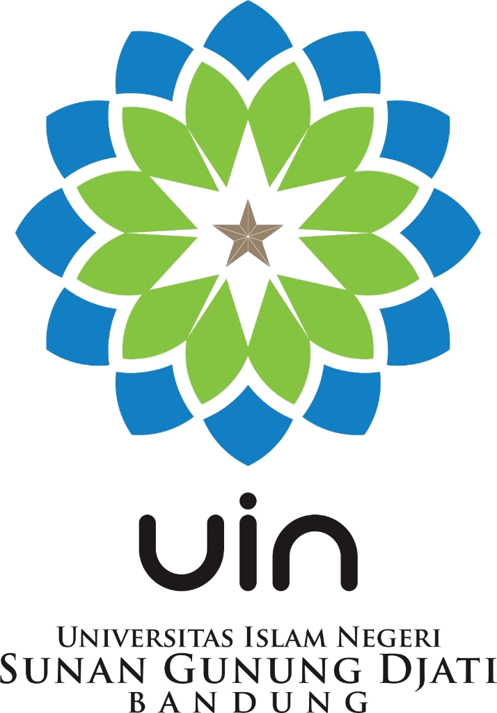

Studi Kuasi-Eksperimen Komparatif terhadap Model Problem Based Learning (PBL) Berbantuan Flashcard
Kesenjangan keterampilan pemecahan masalah fisika di lapangan dan fokus kebaruan riset
Hasil studi pendahuluan menunjukkan bahwa keterampilan pemecahan masalah peserta didik kelas XI MIPA di MAN 2 Bandung masih berada dalam kategori rendah pada setiap aspek yang diuji.
Keterbaruan penelitian ini terletak pada penerapan model pembelajaran Search, Solve, Create, and Share (SSCS) yang diintegrasikan dengan media Flashcard untuk meningkatkan keterampilan pemecahan masalah peserta didik dalam pembelajaran fisika, khususnya pada materi Suhu dan Kalor.
Kerangka metodologis komparatif antara kelas eksperimen (SSCS) dan kelas kontrol (PBL)
Pengukuran numerik objektif terhadap skor keterampilan pemecahan masalah (pretest–posttest) dan persentase observasi kelas.
Membandingkan perlakuan model SSCS + Flashcard (Kelas Eksperimen) terhadap model PBL + Flashcard (Kelas Kontrol).
Rekapitulasi lembar observasi aktivitas guru dan peserta didik selama 3 pertemuan
| No | Pertemuan | Aktivitas Guru | Interpretasi | Aktivitas Siswa | Kategori |
|---|---|---|---|---|---|
| 1 | Pertama | 94% | Sangat baik | 92% | Sangat baik |
| 2 | Kedua | 94% | Sangat baik | 92% | Sangat baik |
| 3 | Ketiga | 96% | Sangat baik | 96% | Sangat baik |
| Rata-rata | 95% | Sangat baik | 93% | Sangat baik | |
| No | Pertemuan | Aktivitas Guru | Interpretasi | Aktivitas Siswa | Kategori |
|---|---|---|---|---|---|
| 1 | Pertama | 90% | Sangat baik | 91% | Sangat baik |
| 2 | Kedua | 93% | Sangat baik | 89% | Sangat baik |
| 3 | Ketiga | 91% | Sangat baik | 89% | Sangat baik |
| Rata-rata | 91% | Sangat baik | 89% | Sangat baik | |
| Kelas | Pretest | Posttest | N-Gain | Kategori |
|---|---|---|---|---|
| Eksperimen (SSCS) | 26 | 91 | 0,88 | Tinggi |
| Kontrol (PBL) | 21 | 86 | 0,82 | Tinggi |
| Indikator KPM | Eksp (Pre→Post) | N-Gain | Kont (Pre→Post) | N-Gain |
|---|---|---|---|---|
| 1. Deskripsi yang berguna | 51 → 94 | 0,88 (Tinggi) | 44 → 91 | 0,84 (Tinggi) |
| 2. Pendekatan fisika | 30 → 91 | 0,87 (Tinggi) | 27 → 86 | 0,81 (Tinggi) |
| 3. Aplikasi fisika spesifik | 10 → 87 | 0,85 (Tinggi) | 7 → 81 | 0,79 (Sedang) |
| 4. Prosedur matematika tepat | 13 → 93 | 0,92 (Tinggi) | 11 → 88 | 0,87 (Tinggi) |
| 5. Progresi logis | 28 → 91 | 0,87 (Tinggi) | 17 → 84 | 0,80 (Tinggi) |
Keterlaksanaan pembelajaran menggunakan model SSCS berbantuan Flashcard memperoleh rata-rata sebesar 95% (aktivitas guru) dan 93% (aktivitas peserta didik). Sementara pada model PBL berbantuan Flashcard memperoleh 91% (guru) dan 89% (peserta didik), dengan masing-masing model memperoleh kategori Sangat Baik.
Analisis N-Gain menunjukkan keterampilan pemecahan masalah peserta didik meningkat sebesar 0,88 setelah penerapan model SSCS dan sebesar 0,82 setelah diterapkan model PBL (keduanya kategori Tinggi). Uji hipotesis nonparametrik Mann-Whitney menunjukkan $H_0$ ditolak ($p < 0,001$), menyatakan terdapat perbedaan peningkatan keterampilan pemecahan masalah yang signifikan.